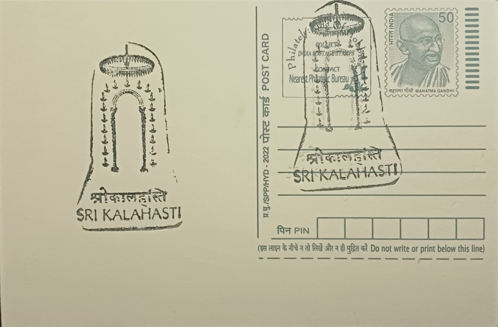

Deity of Sri Kalahasteeswara Swamy
శ్రీ కాళహస్తీశ్వర స్వామి విగ్రహం


The sanctity of Sri Kalahasteeswara Temple is explained through a founding legend in which three devotees of markedly different natures, a spider, a serpent and an elephant, are each said to have worshipped the self-manifested Shiva lingam at this site, unaware of one another, each in their own manner of devotion. The temple's very name is drawn from this story, fusing sri (spider), kala (serpent) and hasti (elephant) with Ishwara, and the tale remains central to how the shrine explains its own sanctity to pilgrims and is retold in temple literature and local tradition to this day.
Sri Kalahasteeswara Temple is counted among the five Pancha Bhoota Sthalas of Shaivism, the group of temples in which Shiva is worshipped in the form of one of the five classical elements, and here the element honoured is Vayu, or air. The association is made vivid inside the sanctum, where an oil lamp is kept burning in an enclosed chamber yet its flame visibly flickers, a phenomenon attributed to air currents and taken by devotees as a continuing sign of the deity's elemental nature. The temple ranks among the most significant Shaiva pilgrimage centres in Andhra Pradesh and draws worshippers from across South India.
The temple's structure reflects contributions made over more than a thousand years, with substantial architectural additions credited to the Chola dynasty and further major expansion under the Vijayanagara rulers between the fourteenth and seventeenth centuries, a period that gave the complex much of its present form, including its towering gopurams and pillared mandapams in the Dravidian style typical of South Indian temple-building of that era. The complex today encompasses the main sanctum, subsidiary shrines, and expansive outer courtyards reflecting successive rounds of royal patronage.
The temple is inseparably linked with Kannappa, one of the sixty-three Nayanar saints of the Tamil Shaiva tradition, who is said to have offered his own eyes to stem blood he believed was flowing from the Shiva lingam, stopping only when Shiva himself intervened and granted him liberation; the episode is frequently cited as one of the most striking instances of devotional fervour in Shaiva hagiography and is commemorated in the temple's ritual and artistic traditions. The temple is also distinguished by its Rahu-Ketu dosha nivarana pujas, rites performed to counteract the astrological afflictions associated with the lunar nodes Rahu and Ketu, drawing worshippers specifically seeking relief from such doshas.
Among Indian temples, Srikalahasti holds a further distinction as one of the few that remains open to the public and continues its rituals during solar and lunar eclipses, when most Hindu temples traditionally close, a practice tied directly to its standing as a centre for Rahu-Ketu worship. The temple functions today under organised religious administration that conducts daily worship alongside the specialised eclipse and dosha-related rites that draw devotees from well beyond the immediate region, sustaining its place as one of the principal working Shiva temples of coastal Andhra Pradesh.
| Date of Introduction | February 14, 1980 |
|---|---|
| Address | Senior Postmaster, |
| Srikalahasti HO, | |
| Tirupati (dt.), Andhra Pradesh - 517644. |